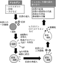

2023年
問題28 アレルギーに関する次の記述のうち，最も不適当なものはどれか．
（1）アレルギーは,ヒトに有害な免疫反応である．
（2）アレルギー反応の発現には，体内の細胞の働きが関係するものがある．
（3）低湿度は，気管支喘息の増悪因子である．
（4）予防には，ダニや真菌が増殖しないよう，換気や清掃が重要である．
（5）建築物衛生法において，ダニ又はダニアレルゲンに関する基準が定められている．
2023年
問題28 正解（5） 頻出度AAA
ご存知のように，室内汚染物質についてビル管理法に定められている項目は，一酸化炭素，二酸化炭素，浮遊粉じんとホルムアルデヒドだけである．
学校環境衛生基準には，ダニ又はダニアレルゲンの基準が定められている（100 匹/m2以下又はこれと同等のアレルゲン量以下であること）．
-(2) ある個体に特定の抗原（体内に侵入した異物＝アレルゲン）によって，その抗原に特異的に結合（攻撃）する抗体（免疫グロブリンと呼ばれる蛋白質）やリンパ球（白血球球の一種）が体内に生じる．これを抗原抗体反応，あるいは免疫反応という．そのうち人に有害な免疫反応をアレルギーと呼んでいる（2023-28-1図参照）．

抗原との二次接触でアレルゲンが肥満細胞に結合し，さらに抗体（IgE，免疫グロブリンE）が結合すると，肥満細胞からヒスタミン等の化学伝達物質が放出される．それらの化学伝達物質は，血管の透過性を増し，気管支壁にある平滑筋を収縮させ，気管支の内腔に分泌される粘液を増加させ，白血球を集める作用がある．アレルギー性鼻炎で鼻汁やくしゃみが出たり，気管支喘息で呼吸困難発作が起きるのは，この反応による．
-(3) 低湿度は気管支喘息の増悪因子の一つであるが，アレルギーの発症，増悪（病態の急な悪化，発作）には，まず第一に患者の素因が関係している．アレルゲンの同定は，症状発生の防止，治療の上で重要である．アレルゲン同定の方法の1つに，皮内テストがある．